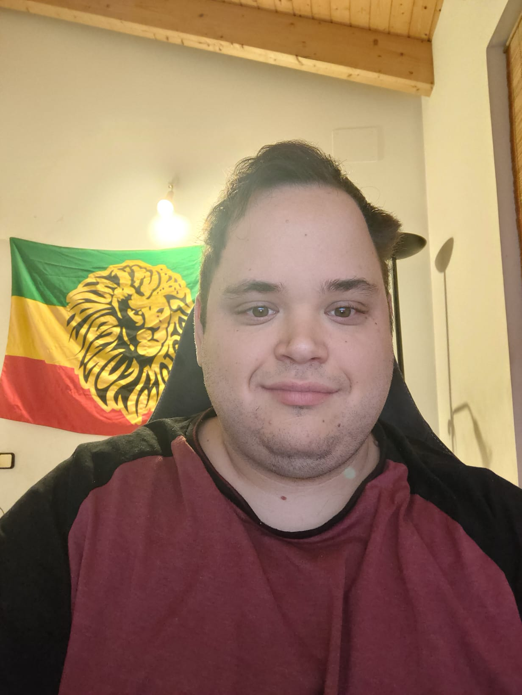

Currículum Vitae de Iñaki Borrego Bau

Iñaki Borrego bau
Perfil
Soy un Cocinero con 10 años de experiencia-laboral cretativo especializado en arroces.
Educación
I.E.S Virgen al pie de la cruz
Grado Superior en Direcion de Cocina
Fecha de Graduación: 2015
Experiencia Laboral
Hotel Mar de Fulles
2 Jefe Cocina
Fecha de Empleo: 2020 - 2023
Elaboración de menus, elaboracion de horarios,
encargado de pedidos a provedores.
Habilidades
- Elaboracion de menus degustacion
- Especialista en arroces
- Buen gestor de equipos
- Trabajar con el APPC
Logros
- Ganador concurso ganba de Denia.
- Finalista en el concurso de ICD de jovenes promeses de la alta cocina.
Intereses
- New coucine
- Arroces de autor🌍
- Agricultura ecologica🐉
- Etnologia ✨